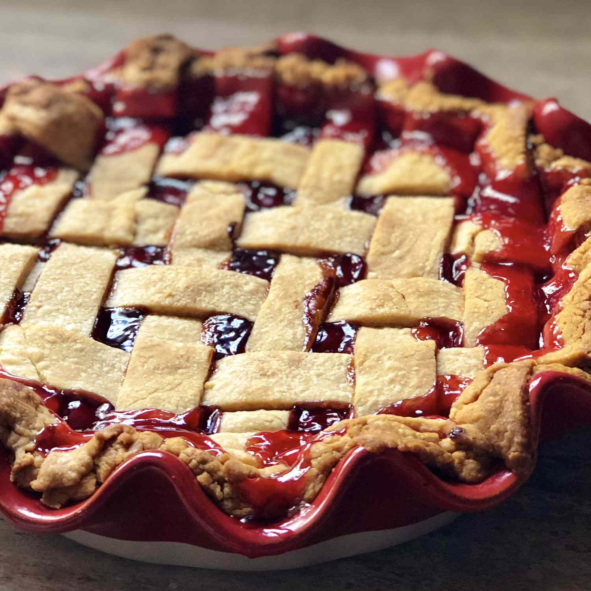

Cherry Pie

Old-fashioned cherry pie recipe features a classic fruity filling in a
buttery homemade pastry crust.
Cherry pie is a can’t-go-wrong dessert that’s sure to please family,
friends and guests alike. A golden-brown pie crust is packed with a
colorful filling to create the perfect balance of sweetness and tartness.
You’ll come across this delicious dessert made with both canned and fresh
cherries. Our Easy Cherry Pie is extra easy—it’s a canned cherry pie
recipe that tastes just as yummy as a totally from-scratch dessert!
Goodbye fuss and mess, hello happiness.
If you’re prepping for a busy holiday season, add this cherry pie recipe
to your list of easy desserts to get ready ahead of time. Prepare your
Easy Cherry Pie as directed, but don’t cut slits in the top crust quite
yet. Wrap your unbaked pie tightly (or use a plastic freezer bag) and
place it in your freezer for up to 3 months. When it’s time to get your
sweet treat ready, cut slits in the still-frozen top crust and bake at
425°F for 15 minutes. Next, reduce the heat to 375°F and bake for 30 to 45
minutes or until the crust is golden brown and you see juice beginning to
bubble through the slits.
Ingredients
- 2 cups all-purpose flour
- 1 pinch salt
- 1 cup shortening, chilled
- ½ cup cold water
- 2 cups pitted sour cherries
- 1 ¼ cups white sugar
- 10 teaspoons cornstarch
- 1 tablespoon butter
- ¼ teaspoon almond extract
Steps
-
Whisk flour and salt together in a bowl. Cut in shortening with 2 knives
or a pastry blender until mixture resembles coarse crumbs. Mix in cold
water by hand just until dough holds together. Divide dough in half and
form into disks. Wrap each disk in plastic wrap and refrigerate until
chilled, 30 minutes to 1 hour.
-
Roll out 1 dough disk into an 11-inch circle and press it into a 9-inch
pie dish. Place in the refrigerator until needed. Roll out remaining
dough disk into an 11-inch circle for the top crust, transfer it to a
plate or baking sheet, and refrigerate until needed.
-
Preheat the oven to 375 degrees F (190 degrees C). Place a baking tray
in the oven to preheat.
-
Place cherries, sugar, and cornstarch in a medium, non-aluminum
saucepan. Allow mixture to stand until juices begin to release, about 10
minutes. Bring to a boil over medium heat, stirring constantly. Lower
the heat and simmer until juices thicken and become translucent, about 1
minute. Remove from heat and stir in butter and almond extract. Allow
filling to cool to lukewarm.
-
Pour cooled filling into prepared pie crust. Cover with top crust, trim
and crimp the edges to seal, and cut vents for steam.
-
Bake in the preheated oven on the preheated baking tray until crust is
golden brown, 45 to 55 minutes. Allow to cool for several hours before
slicing.